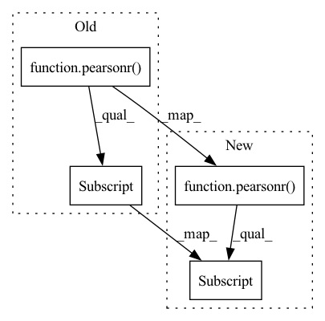

Pattern ID :36539
Before Change
def _sk_pearsonr(preds, target):
sk_preds = preds.view(-1).numpy()
sk_target = target.view(-1).numpy()
return pearsonr(sk_target, sk_preds)[0]
@pytest.mark.parametrize(
"preds, target",After Change
def _sk_pearsonr(preds, target):
if preds.ndim == 2:
return [pearsonr(t.numpy(), p.numpy())[0] for t, p in zip(target.T, preds.T)]
else:
return pearsonr(target.numpy(), preds.numpy())[0]
In pattern: SUPERPATTERN
Frequency: 6
Non-data size: 4
Instances Fragment ID: 103923921
Project Name: lightning-ai/metrics
Commit Name: 460aae3ab1c8a78523efe6d78817fcbf9e4b3839
Time: 2022-09-22
Author: skaftenicki@gmail.com
File Name: tests/unittests/regression/test_pearson.py
M Class Name: AnonimousClass
N Class Name: AnonimousClass
M Method Name: _sk_pearsonr(2)
N Method Name: _sk_pearsonr(2)
M Parent Class:
N Parent Class:
M File Name: tests/unittests/regression/test_pearson.py
N File Name: tests/unittests/regression/test_pearson.py
M Start Line: 41
M End Line: 43
N Start Line: 53
N End Line: 58
Before Change
def pearson_and_spearman(preds, labels):
pearson_corr = pearsonr(preds, labels)[0]
spearman_corr = spearmanr(preds, labels)[0]
return {
"pearson": pearson_corr,
"spearmanr": spearman_corr,After Change
def pearson_and_spearman(preds, labels):
pearson_corr = pearsonr(preds, labels)[0] .tolist()
spearman_corr = spearmanr(preds, labels)[0].tolist()
return {
"pearson": pearson_corr, Fragment ID: 103923925
Project Name: huggingface/datasets
Commit Name: 060dc85e8ef4a668f328cf7255e1f5fa46cc3a22
Time: 2021-07-09
Author: lewis.c.tunstall@gmail.com
File Name: metrics/glue/glue.py
M Class Name: AnonimousClass
N Class Name: AnonimousClass
M Method Name: pearson_and_spearman(2)
N Method Name: pearson_and_spearman(2)
M Parent Class:
N Parent Class:
M File Name: metrics/glue/glue.py
N File Name: metrics/glue/glue.py
M Start Line: 97
M End Line: 98
N Start Line: 97
N End Line: 98
Before Change
def pearson_and_spearman(preds, labels):
pearson_corr = pearsonr(preds, labels)[0] .item()
spearman_corr = spearmanr(preds, labels)[0].item()
return {
"pearson": pearson_corr,After Change
def pearson_and_spearman(preds, labels):
pearson_corr = float(pearsonr(preds, labels)[0] )
spearman_corr = float(spearmanr(preds, labels)[0])
return {
"pearson": pearson_corr, Fragment ID: 103923927
Project Name: huggingface/datasets
Commit Name: 64dadeddb8d2fd9cd457bcaae74e7dd9878fc91b
Time: 2021-10-04
Author: 8515462+albertvillanova@users.noreply.github.com
File Name: metrics/glue/glue.py
M Class Name: AnonimousClass
N Class Name: AnonimousClass
M Method Name: pearson_and_spearman(2)
N Method Name: pearson_and_spearman(2)
M Parent Class:
N Parent Class:
M File Name: metrics/glue/glue.py
N File Name: metrics/glue/glue.py
M Start Line: 97
M End Line: 98
N Start Line: 97
N End Line: 98
Before Change
def _compute(self, predictions, references):
return {
"pearsonr": pearsonr(references, predictions)[0] ,
}
After Change
def _compute(self, predictions, references):
return {
"pearsonr": pearsonr(references, predictions)[0] .item(),
}
Fragment ID: 103923919
Project Name: huggingface/datasets
Commit Name: 5577cf5a3a3a07dfb78e6c0333b40bf9055affdd
Time: 2021-07-09
Author: 42851186+lhoestq@users.noreply.github.com
File Name: metrics/pearsonr/pearsonr.py
M Class Name: Pearsonr
N Class Name: Pearsonr
M Method Name: _compute(3)
N Method Name: _compute(3)
M Parent Class: datasets.Metric
N Parent Class: datasets.Metric
M File Name: metrics/pearsonr/pearsonr.py
N File Name: metrics/pearsonr/pearsonr.py
M Start Line: 97
M End Line: 97
N Start Line: 97
N End Line: 97
Before Change
def _compute(self, predictions, references):
return {
"pearsonr": pearsonr(references, predictions)[0] .item(),
}
After Change
)
def _compute(self, predictions, references):
return {"pearsonr": float(pearsonr(references, predictions)[0] )}
Fragment ID: 103923918
Project Name: huggingface/datasets
Commit Name: 64dadeddb8d2fd9cd457bcaae74e7dd9878fc91b
Time: 2021-10-04
Author: 8515462+albertvillanova@users.noreply.github.com
File Name: metrics/pearsonr/pearsonr.py
M Class Name: Pearsonr
N Class Name: Pearsonr
M Method Name: _compute(3)
N Method Name: _compute(3)
M Parent Class: datasets.Metric
N Parent Class: datasets.Metric
M File Name: metrics/pearsonr/pearsonr.py
N File Name: metrics/pearsonr/pearsonr.py
M Start Line: 97
M End Line: 97
N Start Line: 96
N End Line: 96